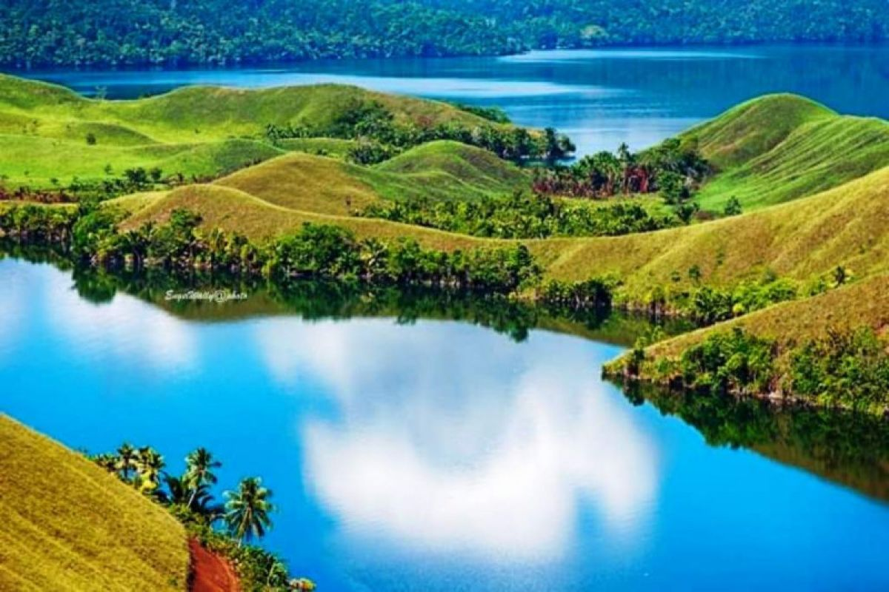
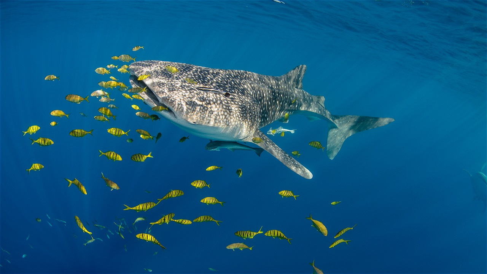
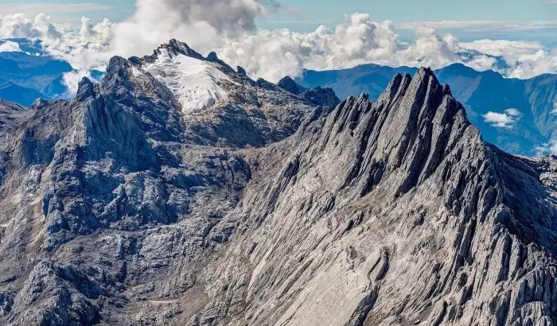

Tentang Pulau Papua
Pulau Papua, pulau terbesar kedua di dunia, adalah mutiara tersembunyi di timur Indonesia. Wilayah ini terbagi menjadi beberapa provinsi dan dikenal sebagai salah satu tempat dengan keanekaragaman hayati terkaya di Bumi (Megabiodiversity). Papua menyimpan keindahan alam yang tak tersentuh, mulai dari hutan tropis lebat, puncak gunung es, hingga surga bawah laut **Raja Ampat** yang tersohor. Kekayaan budaya masyarakat adatnya, seperti suku Dani dan Asmat, juga menjadi daya tarik utama yang menjanjikan pengalaman petualangan dan budaya yang tak tertandingi.
✨ Mengapa Memilih Papua?
Papua menawarkan petualangan yang melampaui batas. **Raja Ampat** di Papua Barat Daya telah diakui sebagai pusat keanekaragaman karang dunia (Coral Triangle), menjadikannya destinasi wajib bagi penyelam. Bagi pecinta budaya, mengunjungi **Lembah Baliem** memberikan kesempatan untuk melihat festival budaya suku-suku pegunungan dan kehidupan tradisional yang masih terjaga. Dari puncak bersalju **Puncak Jaya** hingga hutan yang dipenuhi Cendrawasih (burung surga), Papua adalah destinasi yang menawarkan eksplorasi alam liar dan budaya otentik yang jarang ditemui di tempat lain di dunia.
🗺️ Destinasi Unggulan
Raja Ampat, Papua Barat Daya

Gugusan pulau yang menjadi pusat biodiversitas laut dunia. Terkenal dengan pemandangan karst ikonik di **Piaynemo** dan keindahan bawah laut yang menakjubkan.
Lembah Baliem, Papua Pegunungan

Lembah hijau di pegunungan tengah yang merupakan rumah bagi Suku Dani. Tempat diselenggarakannya **Festival Lembah Baliem** yang menampilkan budaya perang tradisional.
Danau Sentani, Papua
Danau besar yang dikelilingi 24 pulau kecil dengan kampung-kampung terapung. Tempat yang indah untuk menikmati budaya Suku Sentani dan festival tahunan.
Taman Nasional Teluk Cendrawasih, Papua
Taman Nasional laut yang luas dan merupakan habitat bagi **Hiu Paus** (Whale Shark). Cocok untuk *snorkeling* atau *diving* bersama raksasa laut yang ramah.
Puncak Jaya, Papua Tengah
Puncak tertinggi di Indonesia (dan Oseania) yang unik karena memiliki salju abadi di daerah tropis. Merupakan tantangan besar bagi para pendaki profesional.
Agats (Suku Asmat), Papua Selatan

Kawasan tempat tinggal Suku Asmat, terkenal dengan ukiran kayu dan kesenian tradisional mereka yang mendunia. Agats adalah kota di atas lumpur yang unik.
Makanan Khas Pulau Papua
-
1. Papeda

Makanan pokok utama yang terbuat dari sagu, bertekstur seperti bubur lengket dan sering dimakan bersama ikan tongkol kuah kuning yang kaya rempah.
-
2. Ikan Kuah Kuning

Hidangan pendamping Papeda. Ikan laut segar yang dimasak dengan kuah berbasis kunyit, belimbing wuluh, dan perasan jeruk nipis, menghasilkan rasa yang segar dan asam.
-
3. Udang Selingkuh, Wamena

Udang air tawar khas Wamena yang memiliki capit besar menyerupai kepiting. Biasanya diolah dengan cara dibakar dan disajikan dengan sambal dabu-dabu.
-
4. Sagu Lempeng

Makanan ringan atau pengganti nasi yang terbuat dari sagu yang dipanggang (dibentuk seperti lempengan kering). Rasanya tawar dan sering dicocol dengan air gula atau teh.
📸 Galeri Foto Papua